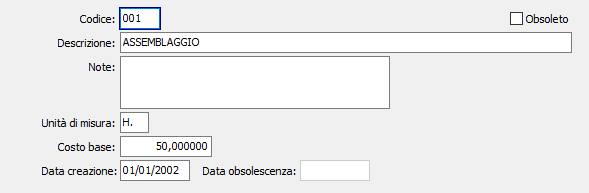

Lavorazioni
La tabella consente di inserire, modificare e cancellare le lavorazioni che andranno a comporre la scheda di lavorazione del prodotto.

CODICE: codice alfanumerico di 3 caratteri per identificare la lavorazione in esame. Sul campo sono attive le funzioni di ricerca (F9) sulla tabella stessa.
DESCRIZIONE: campo alfanumerico di 50 caratteri per descrivere la lavorazione.
NOTE: campo note su più righe per inserire eventuali annotazioni in merito all’utilizzazione della lavorazione.
UNITÀ DI MISURA: rappresenta l'unità di misura a cui viene rapportato il costo della lavorazione.
COSTO BASE: indica il costo base della lavorazione.
DATA CREAZIONE: indica la data in cui il codice è stato caricato. Al momento del caricamento di un nuovo record in questo campo viene proposta la data di sistema.
DATA OBSOLESCENZA: indica la data in cui il codice è stato dichiarato obsoleto.
OBSOLETO: flag attivabile dall’utente per inibire il possibile utilizzo dell’elemento di tabella in esame nelle successive transazioni. Spuntando la casella sarà automaticamente assegnata alla data obsolescenza la data di sistema.